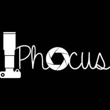
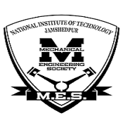
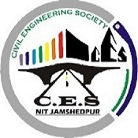

(An Institution of National importance under MHRD, Government of India)
ABOUT THE PAGE
This page gives you all the information you need about the students' activities going on in our college. This page consists of a list of all the different technical and cultural clubs and societies which act as a platform for the students to expand their horizons and discover their inner self. Through these clubs, students get a chance to showcase their talent and build up new skills. These clubs create the social niche which is of utmost importance for all round devlopment of students in a technical institute of national importance like ours.
Let's discover what all these clubs have to offer!
Coding Club
Programming Club of
NIT Jamshedpur (PCON)
PCON, Programming Club of NIT Jamshedpur is group of programming enthusiasts and developers from various departments of the Institute, who aim at improving the programmingculture of the Institute.
ACM Student Chapter
The ACM NIT Jamshedpur chapter is the official ACM chapter of the computer science department of NIT Jamshedpur and was started on 18th January 2013.There are currently 20 members in the team and it is growing at a rapid pace.
The Codechef Chapter
CodeChef Chapter of N.I.T. Jamshedpur proAt_NITJsr aims at promoting competitive programming in college and help students become better problem solvers which goes a long way in learning as well as in their career development.
Web Team
The Web Team consists of some really skilled students with a knack for Web Development.The members get to learn a lot about Web Development and gain hands on experience by developing and maintaining the institute website.
Cultural Club
Photography cum Filmaking
Club (Phocus)

We are the official photography and Film-making team of NIT Jamshedpur. And both the things mentioned are equally important and enjoyable for us. It’s like if Photography is our breakfast, film-making has to be our dinner. Like the greats have said, “Ye sirf Hobby nahi hai! Duniya hai humari”.
Cultural and Dramatics
Society (CDS)
This club represents the total gusto of all the students here. Abbreviated as CDS for the Cultural and Dramatics Society, all the cultural events, competitions, etc. fall under the terrain of this club. The Cultural and Dramatics Society is an agglomeration of various societies of Music, dance, Vocals, Anchoring, Dramatics and Fashion.
FACES
As music is the poetry of sound, so is art the poetry of sight. We at FACES bring this apt saying into practice . FACES which is the acronym for Fine Arts Club for Engineering Students, true to its name ,amasses students with extraordinary cognition in the field of arts.
Personality Development Clubs
Literary And Debating
Society (LDS)
The Literary and Debating Society (LDS) of NIT Jamshedpur established back in 1968, aims at fostering and promoting the literary talents of budding technocrats in the institute. Be it quizzing, jamming, journalism, debating or creative writing, any or all of your skills are bound to be recognized and developed further in this institute.
Soft Skills Club
For honouring the soft skills of the budding engineers, the Soft Skills Club was brought into existence in 2007. The objective of the club is to metamorphose students into Engineers who are complete in all respects, ready to take on all the challenges of life beyond the institute.
QuNITe
QuNITe - the official quiz club of the institute- was created in the year 2012, with a vision of "Pursuing the Excellence in the ever -exciting field of Quizzing " . The Club comprises of quizzing enthusiasts, with a curiosity to learn & explore things, 'the quizzical way'.
Automobile Clubs
Daksh
The team was founded in 2009 by a group of 1st and 2nd years with the objective to design and fabricate a rugged, single seated vehicle with off road capabilities.On 26 March 2009 the SAE collegiate chapter of NIT Jamshedpur took off, as Daksh came to existence. Since then it has been the bearer of the institute pride and prestige at national as well as at international stage..
Revanta
Revanta Supermileage was started in the year 2009 as a result of the dream of a group of students who wanted to break the barriers of mileage.The team then decided to shift gears and switched into the Electric Solar Hybrid Category. Under this category, after a lot of research work the team participated in the Electric Solar Vehicle Championship-2014
One of the first SAE team of college, Team Drift has been the most active of all. Founded in the year 2009 by a group of automobile enthusiasts they took on the challenge to design, manufacture and run a Formula SAE project car. This team has not only won events in India but has also participated in various international events, bringing laurels to the college as well as country.
Rays
The constant depletion of non-renewable energy resources is one of the major threat these days and this threat compelled the students of 2K12 batch of N.I.T Jamshedpur to look over some alternative energy resources and with this idea TEAM RAYS came into existence. It is the first ever initiative by the students of N.I.T Jamshedpur to develop a solar electric vehicle.
Aeromodelling Clubs
Phoenix
A pioneer of Aero Designing in institute, Team Phoenix is a group of engineering amateurs committed to perform high-end aircraft designing and engineering.Since its inception, it has been active in various National and International events and has brought laurels to our institute and nation..
Topguns
We, the aero-design team of NIT Jamshedpur. A prominent team of students from different engineering disciplines involved in making a Radio-Controlled airplane. This team has been participating very consistently in the SAE Aero Design competitions since 2009. With our expertise in Advance category we come up with our aircrafts that meet the competition requisites.
Branch Societies
Mechanical Engineering
Society (MES)

Mechanical Engineering Society was framed to promote and practice skill development activities for the growth of the budding technocrats of the department.Mechanical Engineering Society, NIT Jamshedpur aims to support this initiative of GOI and create individuals who are competent on intellectual platform as well as social grounds.
Civil Engineering Society

Gyrating about the branch, CIVIL ENGINEERING SOCIETY was established in 2008 by the students of NIT Jamshedpur. This was the result of fervent demeanor of several civil engineers who were looking for a common platform for the civil engineers all round the country, to share their views and ideas.
SECE
SECE is a newly formed departmental society. It was established on 18th of Feb,2015. The initiative was taken by the Head, Department of Electronics and Communication Engineering, Prof. (Dr.) S.N Singh, in tandem with ECE 2k12 students. Prof. Amit Prakash and Prof. B. Pradhan are Faculty Advisors of this society with Anuj Goyal as its student President. The Society is currently 200 strong. The prime objective of SECE is promoting and advancing the study and practice of Science and Technology with a special emphasis on electronics and communication.
CSI Students' Branch
NIT Jamshedpur
CSI Students’ Branch - NIT JAMSHEDPUR is a relatively new society that was started on April 01,2011 under the guidance of Prof. Sanjay Kumar (President, CSI Students’ Branch) with the permission and consent of Prof. Rajnish Shrivastava (the then Director, NIT Jamshedpur) and Prof. S.B.L. Seksena (the then HOD, CSE). It comprises of many members and undertakes in-depth discussion encompassing a wide range of topics. It conducts several activities such as conferences, seminars, workshops, exhibitions, training programs, quiz, project competitions, etc..
Society of Computer
Applications (SCA)
Society of Computer Applications of National Institute of Technology, Jamshedpur was founded on 5th of February, 2016 in the austere premises of the Department of Computer Applications, with the vision of organising social and professional activities and events which will help in enriching and strengthening the community within the department..


 Contact us
Contact us